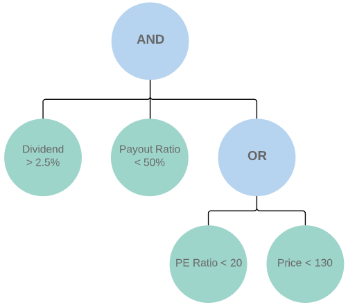
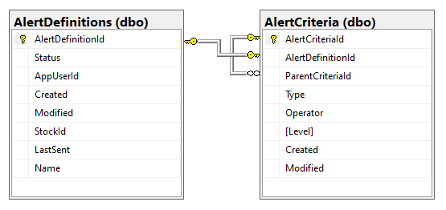
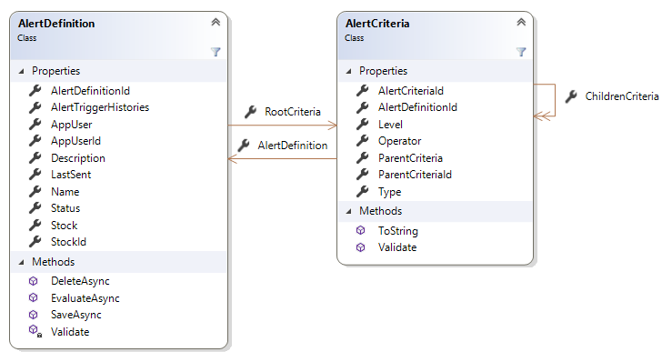

Using the Specification Pattern to Build a Data-Driven Rules Engine
In my Stock Alerts project, the user configures criteria for a given stock that should be evaluated continuously and trigger a notification to the user when the criteria are satisfied.
Rather than simply setting a single price trigger, I want the user to be able to specify multiple types of criteria and combine them using Boolean logic to form a complex rule.
For example, a dividend growth investor might want to be notified when JNJ meets the following criteria:
- Dividend > 2.5% AND
- Payout Ratio < 50% AND
- (PE Ratio < 20 OR Price < 130)

Another investor might want a completely different set of criteria to alert them when their momentum stock darling is about to take off out of a range.
So how do we accomplish this in a clean, configurable, and testable manner?
Enter the Specification Pattern
The specification pattern has been a valuable tool in my toolbox in the past, and it is the perfect tool for the job ahead of us today: building a data-driven rules engine.

The pattern was introduced by Eric Evans, author of Domain-Driven Design: Tackling Complexity in the Heart of Software and father of the domain-driven design (DDD) approach to software development. Evans and Martin Fowler co-wrote a white paper on specifications that is well worth the read addressing the uses of specification, types of specifications, and consequences of specification.
The Wikipedia article on the specification pattern gives us a pretty good definition (as well as some sample C# code) to start with:
In computer programming, the specification pattern is a particular software design pattern, whereby business rules can be recombined by chaining the business rules together using boolean logic.
Evans and Fowler identify the core problems to which the specification pattern is applicable:
- Selection: You need to select a subset of objects based on some criteria, and to refresh the selection at various times
- Validation: You need to check that only suitable objects are used for a certain purpose
- Construction-to-order: You need to describe what an object might do, without explaining the details of how the object does it, but in such a way that a candidate might be built to fulfill the requirement.
The solution to each of these problems is to build a specification that defines the criteria that an object must meet to satisfy the specification. Typically, a specification has a method IsSatisfied(candidate) that takes the candidate object as a parameter. The method returns true or false, depending on whether the candidate satisfies the criteria of the specification.
In this post, we’ll focus on a particular type of specification, a composite specification, to build our rules engine. This type of specification gets its name from the fact that it is an implementation of another commonly used design pattern: the composite pattern.
The Composite Pattern

The composite pattern is one of the twenty-three software design patterns introduced in the Gang of Four’s (GoF) seminal work, Design Patterns: Elements of Reusable Object-Oriented Software. The authors classify the patterns into one of three categories: creational, structural and behavioral. The composite pattern is a structural pattern, meaning it is a pattern that describes how entities relate to each other with the goal of simplifying the structure of a system.
The composite pattern describes a group of entities that can be combined into a tree-like structure, where the individual parts have the same interface as the structure as a whole, allowing clients to interact with the parts and the whole uniformly. This is where the advantage of the composite pattern lies. By treating the composite and its components uniformly, clients avoid having to discriminate between a leaf node and a branch, reducing complexity and the potential for error.
Further, by structuring a component as a composite of primitive objects that are recombinable, we get the benefits of code reuse as we are able to leverage existing components to build other composites. We’ll see this in practice as we get into the code for our rules engine.
Specification Building Blocks
So let’s move from the abstract to the concrete and see some code. Before we start to think about domain-specific rules that we need to implement, we’ll need a few building blocks first.
ISpecification
First, we need an interface for interacting with the composite specification as a whole, as well as its individual component specifications. So here’s our ISpecification interface:
public interface ISpecification<in TCandidate>
{
bool IsSatisfiedBy(TCandidate candidate);
}
It’s a very simple interface consisting of one method, IsSatisfiedBy(TCandidate candidate), which returns true or false depending on whether the given specification is satisfied by the candidate passed to it.
The type parameter TCandidate specifies the type of object that the specification will be used to evaluate. In the case of a composite specification, the type of candidate object passed to the root node will be passed to the child nodes, so the type is expected to be the same for all individual specifications that make up a composite specification.
CompositeSpecification
Next, we have an abstract class CompositeSpecification, which will be the base class for any branch (non-leaf) nodes in our composite specification:
public abstract class CompositeSpecification<TCandidate> : ISpecification<TCandidate>
{
protected readonly List<ISpecification<TCandidate>> _childSpecifications = new List<ISpecification<TCandidate>>();
public void AddChildSpecification(ISpecification<TCandidate> childSpecification)
{
_childSpecifications.Add(childSpecification);
}
public abstract bool IsSatisfiedBy(TCandidate candidate);
public IReadOnlyCollection<ISpecification<TCandidate>> Children => _childSpecifications.AsReadOnly();
}
The main behavior that CompositeSpecification implements here is the management of a node’s child specifications. It handles the addition of a child specification to the composite specification, and it exposes the child specifications as a read-only collection that can be traversed.
Boolean Specifications
The branches (non-leaf nodes) are specifications that represent Boolean operations that connect 1..n other specifications, and they derive from CompositeSpecification. For our initial implementation, we have AND and OR specifications (short-circuited).
AndSpecification:
public class AndSpecification<TCandidate> : CompositeSpecification<TCandidate>
{
public override bool IsSatisfiedBy(TCandidate candidate)
{
if (!_childSpecifications.Any()) return false;
foreach (var s in _childSpecifications)
{
if (!s.IsSatisfiedBy(candidate)) return false;
}
return true;
}
}
OrSpecification:
public class OrSpecification<TCandidate> : CompositeSpecification<TCandidate>
{
public override bool IsSatisfiedBy(TCandidate candidate)
{
if (!_childSpecifications.Any()) return false;
foreach (var s in _childSpecifications)
{
if (s.IsSatisfiedBy(candidate)) return true;
}
return false;
}
}
Of course, other Boolean operators, such as NOT and XOR, could be implemented without too much difficulty, but these are the only two that I’ve needed so far for my application, and they are sufficient for demonstrating the pattern.
Unit Testing the Boolean Specifications
Before we move on to the domain-specification specifications, let’s talk briefly about unit testing. One of the attractive characteristics of the specification pattern is the ease with which specifications can be unit-tested due to the clear boundaries around small, individual chunks of logic.
To assist with unit-testing, I’ve implemented very simple True and False specifications:
public class TrueSpecification<TCandidate> : ISpecification<TCandidate>
{
public bool IsSatisfiedBy(TCandidate candidate) => true;
}
public class FalseSpecification<TCandidate> : ISpecification<TCandidate>
{
public bool IsSatisfiedBy(TCandidate candidate) => false;
}
These one-line specifications aren’t useful in application code, but they come in handy when unit-testing the branch (non-leaf) node specifications. Here’s one of the unit tests for the AndSpecification, utilizing the TrueSpecification:
[Fact]
public void IsSatisfiedBy_TwoTrueChildren_True()
{
// Arrange
var spec = new AndSpecification<AlertEvaluationMessage>();
spec.AddChildSpecification(new TrueSpecification<AlertEvaluationMessage>());
spec.AddChildSpecification(new TrueSpecification<AlertEvaluationMessage>());
var message = new AlertEvaluationMessage();
// Act
var result = spec.IsSatisfiedBy(message);
// Assert
result.Should().BeTrue();
}
TrueSpecification and FalseSpecification facilitate the writing of straight-forward unit tests like the one above that zero in on the unit under test (AndSpecification.IsSatisfiedBy(..) in this case). (You may be wondering about AlertEvaluationMessage - it is the type of the candidate object that we are evaluating, which we’ll examine in a bit.)
Domain-Specific Specifications
Now that we have the building blocks needed to build any specification, we’re ready to look at the things we’ll need to build specifications specific to our domain: stock alerts. As we transition from discussing the Boolean specifications to talking about domain-specific specifications, our focus is moving from the branch (non-leaf) nodes of the composite specification to the leaf nodes.
PriceSpecification
One of the main criteria that our specification will have to test for is, when given a new price quote, whether the new price exceeds a certain level. For this, we’ll create a PriceSpecification that is aware of an alert criteria specifying an important price level, and it will return true or false depending on whether a new stock quote breaches that level:
public class PriceSpecification : ISpecification<AlertEvaluationMessage>
{
private readonly AlertCriteria _alertCriteria;
public PriceSpecification(AlertCriteria alertCriteria)
{
_alertCriteria = alertCriteria ?? throw new ArgumentNullException(nameof(alertCriteria));
}
public bool IsSatisfiedBy(AlertEvaluationMessage candidate)
{
if (_alertCriteria.Operator == CriteriaOperator.GreaterThan)
{
return candidate.LastPrice > _alertCriteria.Level &&
candidate.PreviousLastPrice <= _alertCriteria.Level;
}
if (_alertCriteria.Operator == CriteriaOperator.GreaterThanOrEqualTo)
{
return candidate.LastPrice >= _alertCriteria.Level &&
candidate.PreviousLastPrice < _alertCriteria.Level;
}
if (_alertCriteria.Operator == CriteriaOperator.Equals)
{
return candidate.LastPrice == _alertCriteria.Level &&
candidate.PreviousLastPrice != _alertCriteria.Level;
}
if (_alertCriteria.Operator == CriteriaOperator.LessThanOrEqualTo)
{
return candidate.LastPrice <= _alertCriteria.Level &&
candidate.PreviousLastPrice > _alertCriteria.Level;
}
if (_alertCriteria.Operator == CriteriaOperator.LessThan)
{
return candidate.LastPrice < _alertCriteria.Level &&
candidate.PreviousLastPrice >= _alertCriteria.Level;
}
return false;
}
}
AlertCriteria
This specification has a domain model passed to it at the time it is constructed: AlertCriteria. We’ll look at just the few properties of AlertCriteria that are relevant to this particular specification for now:
public class AlertCriteria
{
// snip
public CriteriaType Type { get; set; }
public CriteriaOperator Operator { get; set; }
public decimal? Level { get; set; }
// snip
}
Type specifies the alert CriteriaType that we’re evaluating. Possible values are Composite, Price, DailyPercentageGainLoss, and there will likely be more. Operator specifies the CriteriaOperator that applies for the particular scenario we’re evaluating. Finally, if we need to trigger a price alert, we need to know at which level it should be triggered, which is what is specified by the Level property. With these three pieces of data, we have what we need to know to create a specification that represents a price alert for a given stock’s price becomes greater than or equal to $150, for example.
The AlertCriteria domain object will ultimately come from the database, and is a key part of the data model that will make this a data-driven rules engine. We’ll look at it more closely in bit.
AlertEvaluationMessage
The next piece needed for our PriceSpecification is AlertEvaluationMessage, which is the type of candidate object that our specification is designed to evaluate. In our example, AlertEvaluationMessage represents a new price quote (named Message since in this particular case it’s being pulled off of a message queue).
public class AlertEvaluationMessage
{
public Guid AlertDefinitionId { get; set; }
public decimal LastPrice { get; set; }
public decimal PreviousLastPrice { get; set; }
public decimal OpenPrice { get; set; }
}
The relevant properties here for our PriceSpecification are LastPrice and PreviousLastPrice, so that we can determine whether a price has crossed a certain price level.
IsSatisfiedBy(AlertEvaluationMessage candidate)
Now that we have the required information, we can evaluate whether the PriceSpecification for our particular AlertCriteria is satisfied by the candidate AlertEvaluationMessage object. IsSatisfiedBy(AlertEvaluationMessage candidate) is a fairly simple set of if statements that perform comparisons between _alertCriteria.Level and candidate.LastPrice and candidate.PreviousLastPrice depending on _alertCriteria.Operator and returns true or false to indicate whether the price level has been breached.
Other Domain-Specific Specifications
I’ve also implemented a DailyPercentageGainLossSpecification, which returns true or false depending on whether the stock price has exceeded a given percentage gain or loss for the day. Its logic is very similar to the PriceSpecification that we just discussed.
Other types of specifications that I plan to implement in the future are things like DividendYieldSpecification, which would return true when a stock’s dividend yield breaches a certain percentage, or PeRatioSpecification, which would return true when a stock’s PE ratio breaches a certain level.
The sky is the limit in terms of what kinds of specifications we can implement and combine into a composite specification. The specifications that we build are generic in the sense that the specific parameters (price level, operator, etc…) are provided at runtime, so that our PriceSpecification, for example, can be re-used in any composite specification that needs to test for a price level breach as part of its logic.
Hopefully by now it’s becoming a bit clearer how the specification pattern can be used to construct a complex rule like described at the beginning of this post.
Constructing the Composite Specification
Now that we have the pieces needed to represent and evaluate a set of criteria, let’s revisit our use case. Users need to be able to specify their alert criteria at runtime, and the system needs to store these criteria so that it can retrieve them and construct the composite specification and evaluate it on demand when a new stock quote is received.
Data Model
The data model to support this use case consists of two tables:
- AlertDefinitions
- Contains a record for each user-defined alert.
- Represents the overall composite specification for an alert for a user for a given stock.
- AlertCriteria
- Contains a record for each individual criteria that make up an AlertDefinition.
- Represents an individual specification.
- One-to-many relationship back to AlertDefinitions.
- Zero-to-many relationship back to itself.
- Because AlertCriteria is a self-referencing table, it can be used to represent any number of nodes in a complex composite specification.

Domain Model
Moving up to the domain model, we have AlertDefinition and AlertCriteria models that are mapped from and correspond with the two tables in the underlying data model.

These domain models make up an aggregate, and AlertDefinition is the aggregate root. The persistance of the aggregate is controlled via the SaveAsync and DeleteAsync methods on AlertDefinition.
The domain models contain logic for validating the proper configuration of the composite specification, which is checked at the time the AlertDefinition is saved. For example…
- A composite
AlertCriteriacan only have certain operators (AND,OR, other Boolean operators). - A composite
AlertCriteriamust have at least one childAlertCriteria. - A non-composite
AlertCriteriacannot have any children. - Etc…
The construction and evaluation of the composite specification is triggered in AlertDefinition.EvaluateAsync(AlertEvaluationMessage message):
public async Task EvaluateAsync(AlertEvaluationMessage message)
{
if (Status == AlertDefinitionStatuses.Enabled)
{
if (!LastSent.HasValue || DateTimeOffset.UtcNow.Date > LastSent.Value.Date) // Alert not already sent today
{
var specification = _alertCriteriaSpecificationFactory.CreateSpecification(this);
if (specification.IsSatisfiedBy(message))
{
var subject = $"Stock Alert Triggered: {Stock.Symbol}";
var notificationMessage = $"Stock Alert Triggered {Environment.NewLine}" +
$"Notification Name: {Name}{Environment.NewLine}" +
$"Stock: {Stock.Symbol} ({message.LastPrice:C}){Environment.NewLine}" +
$"Criteria: {RootCriteria}{Environment.NewLine}";
await TriggerAlertAsync(subject, notificationMessage);
}
}
}
}
This is the culmination of all that we’ve been building. We’ve now got our composite specification (created by the _alertCriteriaSpecificationFactory, which we will visit in a moment) representing the user-defined alert definition, and we evaluate the entire set of rules with our call to specification.IsSatisfiedBy(message), which simply returns true or false.
It may seem rather anti-climactic on the surface, but there is a lot of power within the specification and the beauty of the pattern lies in the simplicity of its interface. The client simply asks the specification, “Does this object satisfy your criteria?”
Factory
The AlertCriteriaSpecificationFactory is the final piece of the puzzle that we’ll look at. It is responsible for the actual construction of the composite specification and its children from the AlertDefinition. It is an example of the factory pattern, a creational design pattern coined by the Gang of Four.
The AlertCriteriaSpecificationFactory will create any ISpecification<AlertEvaluationMessage> for a given AlertDefinition:
public interface IAlertCriteriaSpecificationFactory
{
ISpecification<AlertEvaluationMessage> CreateSpecification(AlertDefinition alertDefinition);
}
Though we only publicly expose a single method in the interface for building an ISpecification from an AlertDefinition, in the implementation of the factory we see that it is also responsible for building the ISpecifications that make up the composite from individual AlertCriteria objects. The factory contains private methods for constructing each type of specification, and it recursively traverses the tree of alert criteria building the various individual specifications to construct the full composite specification for the AlertDefinition:
public class AlertCriteriaSpecificationFactory : IAlertCriteriaSpecificationFactory
{
private readonly IDictionary<CriteriaType, Func<AlertCriteria, ISpecification<AlertEvaluationMessage>>> _factoryMethods;
public AlertCriteriaSpecificationFactory()
{
_factoryMethods = new Dictionary<CriteriaType, Func<AlertCriteria, ISpecification<AlertEvaluationMessage>>>
{
{ CriteriaType.Composite, CreateCompositeSpecification },
{ CriteriaType.Price, CreatePriceSpecification },
{ CriteriaType.DailyPercentageGainLoss, CreateDailyPercentageGainLossSpecification }
};
}
public ISpecification<AlertEvaluationMessage> CreateSpecification(AlertDefinition alertDefinition)
{
return CreateSpecification(alertDefinition.RootCriteria);
}
public ISpecification<AlertEvaluationMessage> CreateSpecification(AlertCriteria alertCriteria)
{
var factoryMethod = _factoryMethods[alertCriteria.Type];
return factoryMethod.Invoke(alertCriteria);
}
private ISpecification<AlertEvaluationMessage> CreateCompositeSpecification(
AlertCriteria alertCriteria)
{
CompositeSpecification<AlertEvaluationMessage> specification;
if (alertCriteria.Operator == CriteriaOperator.And)
specification = new AndSpecification<AlertEvaluationMessage>();
else if (alertCriteria.Operator == CriteriaOperator.Or)
specification = new OrSpecification<AlertEvaluationMessage>();
else
throw new ApplicationException("Operator not supported.");
foreach (var c in alertCriteria.ChildrenCriteria)
{
specification.AddChildSpecification(CreateSpecification(c));
}
return specification;
}
private ISpecification<AlertEvaluationMessage> CreatePriceSpecification(
AlertCriteria alertCriteria) =>
new PriceSpecification(alertCriteria);
private ISpecification<AlertEvaluationMessage> CreateDailyPercentageGainLossSpecification(
AlertCriteria alertCriteria) =>
new DailyPercentageGainLossSpecification(alertCriteria);
}
Wrapping Up
Whew!
This was a long post, but I hope it has been a helpful introduction to the specification pattern. It’s a powerful pattern for modeling and evaluating complex rules that goes a long way towards minimizing complexity when applied to an appropriate use case.
A composite specification can be constructed at design-time for cases where the rules are known ahead of time. It simplifies things a bit while still providing all of the benefits of the pattern. Many use cases fall into this category.
On the other hand, if the rules aren’t known until runtime (as in our case, where the stock alert criteria are user-defined), the composite specification can be created from a representation of the rules stored as records in a database, resulting in a full-blown data-driven rules engine, as we demonstrated in this post.
As always, thanks for reading!
-Jon